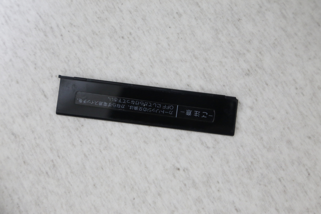
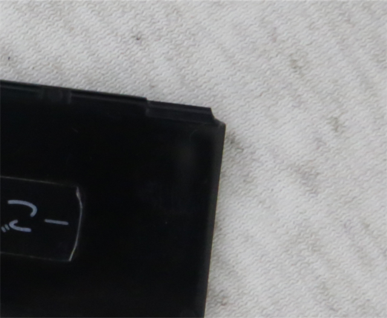

JLCPCB の 3Dプリントサービスを使って CASIO MX-101 スロットカバーを作る (2022年9月23日現在)
≪イントロダクション≫
MX-101 のスロットカバーが、突如とれました。
乱暴に扱ったわけでも無く、軸が折れるような音がしたわけでもないのに、軸の部分が根元から折れていました。

[壊れたスロットカバー]

[壊れた軸のアップ]
経年劣化で脆くなっていたのでしょうね。
半透明の黒いアクリルのような部材なので、あまり強い部材では無さそうです。
折れた破片の方は、どこへ行ったのやら見つかりませんので、3Dプリントして作ることにしました。
ということで、RD-10 の外装出力で良好な結果を得られた JLCPCB へ、3Dプリントをお願いしてみることにしました。
以降、手順についてまとめておきます。
[次へ]